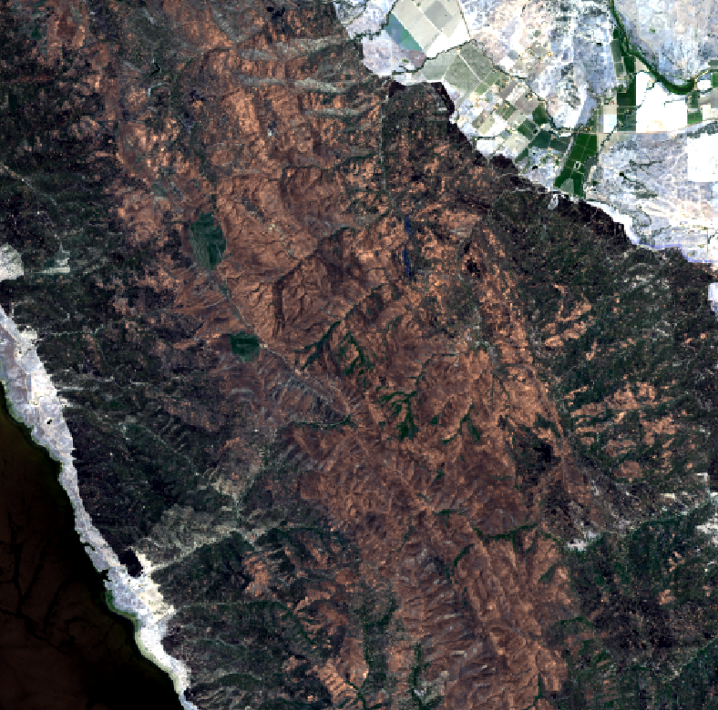
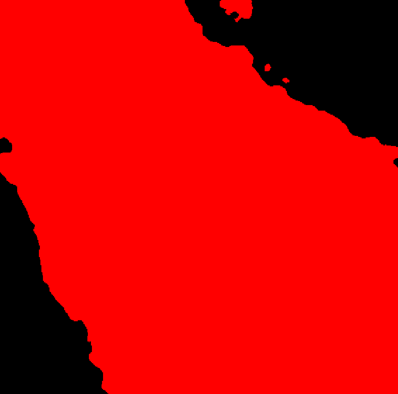

Performing an inference task with TerraTorch#
Step 1: Download the test case from HuggingFace#
We will use the burn scars identification test case, in which we are interested in estimating the area affected by wildfires using a finetuned model (Prithvi-EO backbone + CNN decoder). To download the complete example, do:
Step 2: Run the default inference case#
The example you download already contains some sample images to be used as input, so you just need to go to the local repository and create a directory to save the outputs:
and to execute a command line like:terratorch predict -c burn_scars_config.yaml --predict_output_dir outputs/ --data.init_args.predict_data_root examples/ --ckpt_path Prithvi_EO_V2_300M_BurnScars.pt
outputs directory.
Input image (RGB components)#

Predicted mask#
}
More examples#
For some examples of training using the existing tasks, check out the following pages on our github repo:
From config files#
Under examples/confs
-
Flood Segmentation with ViT:
sen1floods11_vit.yaml -
Flood Segmentation with ViT and an SMP head:
sen1floods11_vit_smp.yaml -
Flood Segmentation with ViT and an MMSeg head:
sen1floods11_vit_mmseg.yaml -
Multitemporal Crop Segmentation:
multitemporal_crop.yaml -
Burn Scar Segmentation:
burn_scars.yaml -
Scene Classification:
eurosat.yaml
External examples available in Prithvi-EO-2.0